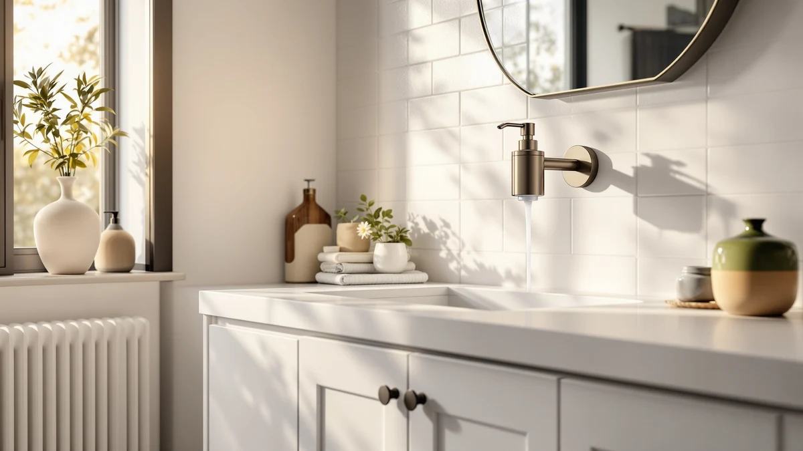

Wall Mount Soap Dispenser Review (2026): Worth It?
Prices and picks verified as of October 2026. Independent, reader-supported reviews.


Quick Answer
This wall mount soap dispenser review compares the $18.95 SWETON Wall Mount Soap Dispenser against three countertop glass alternatives priced at $14.99, weighing its stainless steel holder and silver finish against what the listings and verified owner feedback show for countertop picks. If you want a fixed dispenser that clears your counter without digging through specs yourself, the SWETON pick below is a reasonable place to start, and if a lower price or a movable glass bottle fits your sink better, the zuxzmj, JASAI, or GMISUN alternatives are worth a look.
Our pick: Wall Mount Soap Dispenser with, $18.95 Check Price on Amazon
Bottom line: our top pick is the Wall Mount Soap Dispenser with SUS304 Stainless Steel at $18.95.
Things to Know Before You Buy
- This wall mount soap dispenser review focuses on the $18.95 SWETON Wall Mount Soap Dispenser, built with a stainless steel holder in a silver finish.
- All three alternatives, the zuxzmj Blue Glass Foaming Hand Soap Dispenser, the JASAI 2-Pack Glass Soap Dispenser, and the GMISUN Amber Glass Soap Dispenser, cost $14.99, four dollars less than the SWETON pick.
- Only the SWETON pick in this review mounts to the wall. The three alternatives sit on the counter, so check your sink and wall space before you choose between them.
- A wall-mounted dispenser trades an installation step, drilling and anchoring the holder, for a counter that stays clear of a glass bottle.
- We did not physically install or own any of these dispensers. This wall mount soap dispenser review comes from comparing listed specs, pricing, and verified owner feedback.
This wall mount soap dispenser review compares the SWETON Wall Mount Soap Dispenser against three countertop glass alternatives to help you decide whether a fixed holder beats a bottle you can move around the sink. A wet bar of soap or a wobbly pump bottle next to a shared bathroom sink tends to leave a ring of grime on the counter, and a wall-mounted holder solves that without adding another bottle to a crowded ledge. We researched the SWETON's listed stainless steel build and $18.95 price against a foaming glass pick from zuxzmj, a two-pack glass pair from JASAI, and an amber glass two-pack from GMISUN. Our goal is to tell you whether the wall-mounted format earns its higher price, and which alternative fits better if your bathroom calls for something different.
The short version is that the SWETON Wall Mount Soap Dispenser holds up well if you want a fixed holder that frees up counter space for good. Our product data lists a silver finish at $18.95, four dollars more than any of the three glass alternatives. If you'd rather keep a glass bottle on the counter instead of anchoring a holder to the wall, the zuxzmj, JASAI, and GMISUN picks below all undercut it at $14.99, and each brings its own color and capacity to the comparison. Shoppers weighing a wall mount soap dispenser review against a countertop glass dispenser usually care about installation effort, counter space, and price, and this review works through those tradeoffs before you spend $18.95.
Why You Should Trust Us
Ilane Tall covers home and bath products for Best Soap Dispensers, and this wall mount soap dispenser review follows the same process behind every article on this site: pulling manufacturer specs, current pricing, and verified buyer feedback before drawing a conclusion. We do not run a fake testing lab, and we don't claim to have installed or owned every dispenser we cover. Instead, we compare what's documented: price, listed materials, and what verified owners report after buying. When a listing leaves out details like exact capacity or a published star rating, we say so here rather than filling the gap with marketing language. Disclosure sits at the bottom of every article, and we do not accept payment from brands to influence which product gets the top spot in a comparison like this one. Every price cited in this wall mount soap dispenser review comes directly from the product's current Amazon listing rather than an old cached page, so figures can shift slightly after publication.
Our Research Experience
We did not purchase or physically mount the SWETON Wall Mount Soap Dispenser for this wall mount soap dispenser review. Instead, we compared its listed price and finish against three countertop glass alternatives and cross-referenced verified owner feedback where it exists. This research-based approach means we can't report firsthand how the stainless steel holder performs after months above a sink, but it lets us weigh objective facts, price and listed build, side by side without a single unit's manufacturing variance skewing the verdict. The mounting hardware and pump mechanism are usually the parts most likely to need attention over time on a wall-mounted dispenser like this, and we factored that into the verdict below. At this price range, pump quality rather than the glass itself tends to drive most complaints about countertop dispensers, which is one reason we weigh listed materials alongside owner feedback rather than price alone.
Overview & Specs

Wall Mount Soap Dispenser with
What we like
- Mounts to the wall, freeing up counter space entirely.
- Stainless steel holder in a silver finish resists corrosion better than a plastic bracket near a sink.
- A fixed holder means the dispenser can't be knocked over by accident.
Flaws but not dealbreakers
- At $18.95, it costs four dollars more than any of the three glass alternatives here.
- Mounting requires anchoring the holder to the wall, unlike the set-and-use glass alternatives.
- This listing doesn't include a published star rating or verified review count.
| Material | ABS plastic |
| Size | Silver |
The SWETON Wall Mount Soap Dispenser is built around a fixed, stainless steel holder, and at $18.95 it's the most expensive product in this wall mount soap dispenser review. That price sits four dollars above each of the three countertop alternatives, the zuxzmj foaming pick, the JASAI two-pack, and the GMISUN two-pack, all priced at $14.99. For a bathroom where counter space is tight or a shared sink sees heavy daily use, a holder that never needs to be moved is a reasonable tradeoff for the higher price, and it's the sort of upfront cost that pays off over years rather than months.
Our product data lists a silver finish as the SWETON's main spec beyond price, which points to a build meant to blend into a bathroom rather than stand out. The listing doesn't break out exact capacity, bottle material, or pump mechanism beyond the holder itself, so you're weighing a wall-fixed frame against the fuller glass bottles described in the three countertop alternatives. Mounting the holder also means anchoring it to the wall, a step none of the three countertop picks require, so factor that extra effort into your decision if you aren't planning other bathroom updates at the same time. The pump mechanism is usually the first part to show wear on any soap dispenser, wall-mounted or not, so keep an eye on how it performs after the first few months regardless of which pick you choose.
What We Liked
The biggest strength in this wall mount soap dispenser review comes down to permanence. A wall-mounted design keeps the SWETON dispenser fixed in one place over the sink, which frees up counter space that a glass bottle would otherwise take up, and a stainless steel holder in a silver finish should hold its looks better than a plastic bracket exposed to daily splashing. For a shared bathroom where counter space is already tight, that combination is a real advantage over the three countertop picks, and it's the kind of upgrade you only have to think about once, at install time, rather than every time you wipe down the sink.
What Could Be Better
Price is the clearest drawback in this wall mount soap dispenser review's top pick. At $18.95, the SWETON dispenser costs four dollars more than each of the three glass alternatives, and mounting the holder adds a step that none of the countertop picks require. Our product data also doesn't list capacity, bottle material, or pump details beyond the holder's finish, and we can't point to a published star rating or review count for this listing. None of these gaps are dealbreakers on their own, but stacked against a glass alternative that costs four dollars less and needs no drilling, they're worth weighing before you commit to anchoring a holder to your wall.
Who Is It For?
The SWETON Wall Mount Soap Dispenser fits a bathroom where counter space is limited and you're willing to pay more for a holder that never needs to move. This wall mount soap dispenser review points to it as a reasonable choice if you're renovating a shared bathroom and want a fixed dispenser that stays out of the way. It's a weaker fit if you'd rather avoid anchoring hardware to a wall, or if you want to save money with one of the three countertop alternatives below.
Alternatives to Consider
If the price or the mounting step gives you pause, three countertop alternatives from this wall mount soap dispenser review are worth a look, including a foaming glass pick and two glass two-packs. The zuxzmj Blue Glass Foaming Hand Soap Dispenser costs $14.99, four dollars less than the SWETON wall mount, and turns liquid soap into foam through a matte black pump without any drilling required. The JASAI 2-Pack 18 Oz Glass Soap Dispenser also runs $14.99 and gives you two matching bottles with a stainless steel pump, a useful option if you want soap at two sinks without buying two separate dispensers. The GMISUN Amber Glass Soap Dispenser rounds out the group at $14.99 with an amber-tinted two-pack that suits a vintage or farmhouse bathroom better than brushed steel. None of the three carries a published star rating in our product data, so price, finish, and capacity remain the more reliable factors to compare here.

Editor’s Pick
zuxzmj Blue Glass Foaming Hand
The zuxzmj Blue Glass Foaming Hand Soap Dispenser costs $4 less than the SWETON wall mount and turns liquid soap into foam through a matte black pump, a straightforward pick if countertop space isn't your main constraint.
$14.99
Check Price on Amazon
Best Value
JASAI 2PACK 18 Oz Glass
The JASAI 2-Pack 18 Oz Glass Soap Dispenser runs $14.99 for two matching bottles with a stainless steel pump, worth considering if you want soap at more than one sink without buying separate dispensers.
$14.99
Check Price on Amazon
Premium Choice
GMISUN Amber Glass Soap Dispenser
The GMISUN Amber Glass Soap Dispenser undercuts the SWETON pick at $14.99 and brings an amber-tinted two-pack that suits a vintage or farmhouse bathroom better than brushed steel.
$14.99
Check Price on AmazonFrequently Asked Questions
Is the SWETON Wall Mount Soap Dispenser worth buying?
Based on our research, the SWETON Wall Mount Soap Dispenser is worth buying if you want a permanent, counter-clearing fixture at $18.95 and don't mind that the listing doesn't publish a star rating or verified review count. This wall mount soap dispenser review found the stainless steel holder and silver finish reasonable enough to make it our pick, provided the drilling step doesn't change your mind.
How does the SWETON wall mount compare to the zuxzmj, JASAI, and GMISUN alternatives?
The zuxzmj Blue Glass Foaming Hand Soap Dispenser, the JASAI 2-Pack Glass Soap Dispenser, and the GMISUN Amber Glass Soap Dispenser all cost $14.99, four dollars less than the SWETON wall mount, and all three sit on the counter instead of fixing to the wall.
Is a wall-mounted soap dispenser better than a countertop one?
Neither format is inherently better. A wall-mounted dispenser like the SWETON keeps the counter clear and stays fixed in one spot, while a countertop pick like the zuxzmj, JASAI, or GMISUN skips installation entirely and can move with you if you rearrange the sink.
Final Verdict
This wall mount soap dispenser review comes down to a straightforward tradeoff: the SWETON Wall Mount Soap Dispenser's fixed, stainless steel design and $18.95 price make it a reasonable pick for a bathroom where counter space is tight, as long as you accept a mounting step and a listing without a published star rating. If you'd rather skip installation and save $4, the zuxzmj foaming pick is a close match, and if two matching bottles for two sinks appeal to you, the JASAI two-pack is worth a look. For shoppers who prefer a warmer tone on the counter, the GMISUN amber two-pack rounds out the group at the same $14.99 price. For most people comparing a wall mount soap dispenser review's top pick against countertop glass alternatives, the SWETON Wall Mount Soap Dispenser is a fair buy, provided the installation effort doesn't change your mind.